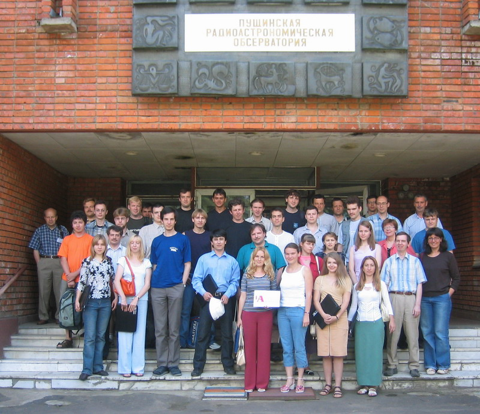
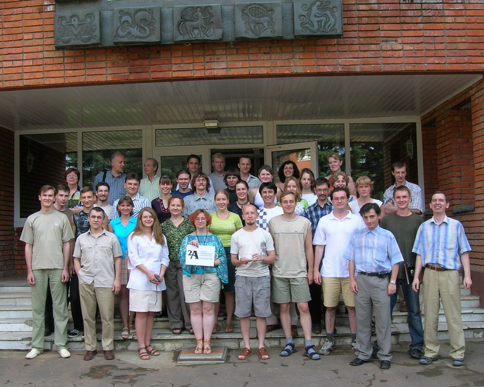
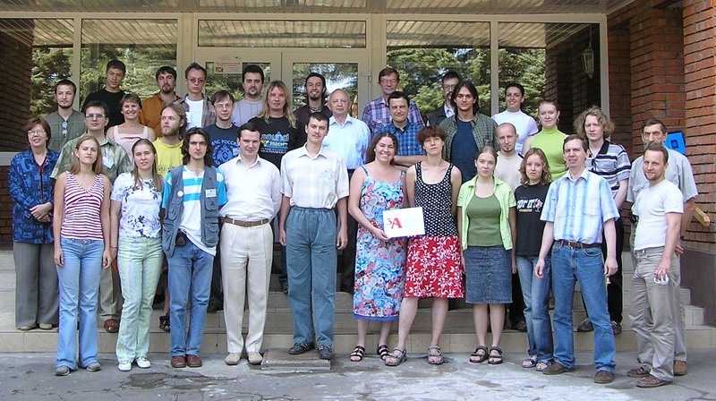
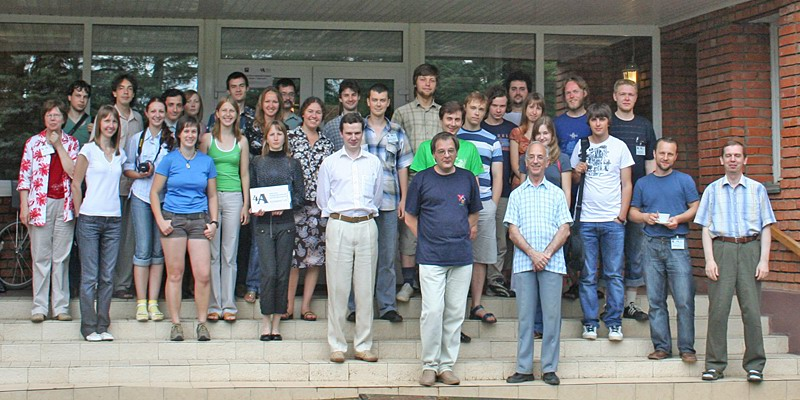
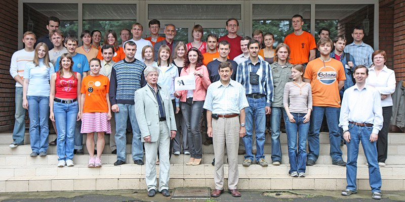
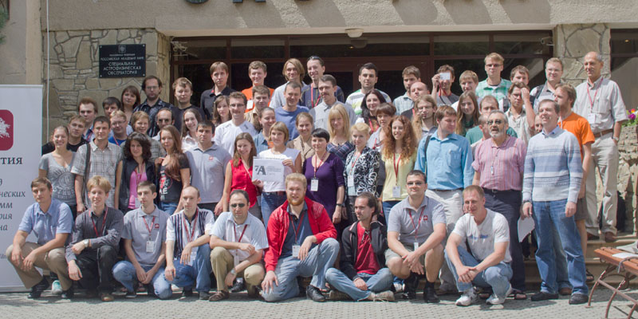
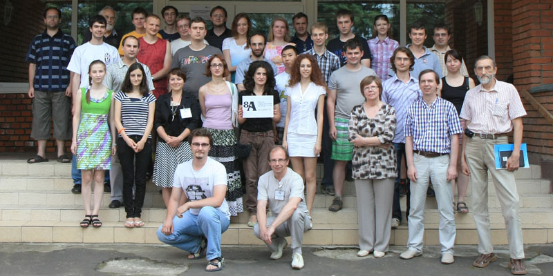

ШКОЛА СОВРЕМЕННОЙ АСТРОФИЗИКИ
В.С. Бескин
С самого детства ребенок, погруженный в мир компьютерных игр, узнает, что можно положить большой кубик на маленький, и равновесие этой конструкции не будет противоречить законам физики. Неудивительно поэтому, что подобное происходит сейчас и в науке. Мощное развитие вычислительной техники привело к тому, что “классические” аналитические методы исследования вытесняются направлениями, в которых основная роль отводится численному счету. Каждый, кто хоть когда-нибудь сталкивался с этой проблемой, знает, насколько “виртуальными” подчас являются результаты компьютерных вычислений, как осторожно нужно относиться к их результатам.
Все это в полной мере относится и к астрофизике. Современная Российская астрофизическая школа, создание которой связано с именами В.Л.Гинзбурга, Я.Б.Зельдовича и И.С.Шкловского, всегда опиралась на прочный физический фундамент, и именно это принесло ей мировую известность и славу. Однако в последнее время смещение центра тяжести исследований в сторону численного эксперимента неизбежно привело к уменьшению роли строгих аналитических результатов, в том числе и в образовательных программах. Поэтому и возникла идея организации ежегодной Школы Современной Астрофизики, которая должна была помочь сохранить весь огромный потенциал, накопленный за предыдущие годы. При этом основная цель Школы состояла именно в полировке мастерства, так что она должна была собрать главным образом не студентов, а аспирантов и молодых научных сотрудников.
Организаторами Школы выступили Научный Совет РАН по Астрономии, Астрокосмический центр и Отделение теоретической физики им. И.Е.Тамма ФИАН, а также Кафедра проблем физики и астрофизики МФТИ. В Программный комитет, возглавляемый академиком В.Л.Гинзбургом, вошли члены Российской Академии Наук Д.А.Варшалович, В.В.Железняков, Л.М.Зеленый, А.В.Гуревич, Н.С.Кардашев, В.В.Кочаровский, А.М.Черепащук, доктора наук А.О.Барвинский, В.С.Бескин, В.А.Догель, В.Н.Лукаш, Д.И.Нагирнер, Д.Г.Яковлев. При этом имелось в виду, что основное внимание должно было быть уделено именно последовательному обсуждению сути физических процессов, лежащих в основе обсуждаемых явлений. И это не случайно.
Прежде всего, аналитические методы воспитывают нашу интуицию, позволяющую уже на самом раннем этапе отбросить безжизненные гипотезы. К сожалению, и этот фундаментальный принцип научный работы сейчас начинает размываться. Порой складывается впечатление, что целью многих работ не является получение конечного результата (напомним, что Гинзбург и Зельдович прошли через атомный проект, когда вопрос о получении необходимого результата к определенному сроку был равносилен вопросу о жизни и смерти). Конечно, здесь как раз могла бы помочь компьютерная визуализация, однако в настоящее время эта программа еще не реализована.
Кроме того, все области классической физики (например, уравнения Максвелла) всегда являются образцом логически совершенной теории, что также имеет непреходящее значение. Возможно, именно поэтому в дореволюционной России преподавались мертвые, но логически безупречные греческий и латинский языки. Кстати, логика, наравне с арифметикой, была одним из основных предметов и в Царскосельском Лицее. С другой стороны, XX век показал, к чему приводит отказ от логических методов аргументации в угоду более прогрессивным и какую дорогую цену приходится платить за это. Однако, “чтобы быть бессмертным, недостаточно не умирать. Нужно время от времени возрождаться вновь”. Поэтому мы надеялись, что Школа покажет и то, насколько плодотворным может быть использование классических методов исследования, к каким красивым и важным результатам они приводят.
Первая Школа Современной Астрофизики
Первая Школа Современной Астрофизики проходила в июле 2005 года в г. Пущино Московской области на базе Радиоастрономической станции АКЦ ФИАН. Расположенная в одном из живописнейших мест Подмосковья на высоком берегу реки Оки и обладающая всей необходимой инфраструктурой, РАС АКЦ ФИАН является идеальным местом для проведения подобных мероприятий. За две недели были прочитаны четыре курса по десять лекций, соответствующие обычным семестровым курсам:
В.С. Бескин (ОТФ ФИАН) — ОСЕСИММЕТРИЧНЫЕ СТАЦИОНАРНЫЕ ТЕЧЕНИЯ В АСТРОФИЗИКЕ
В.А. Догель (ОТФ ФИАН) — КИНЕТИКА КОСМЧЕСКИХ ЛУЧЕЙ
В.Н. Лукаш (Астрокосмический центр ФИАН) — ОЧЕНЬ РАННЯЯ ВСЕЛЕННАЯ
Д.Г. Яковлев (ФТИ им. А.Ф. Иоффе РАН) — СТРОЕНИЕ НЕЙТРОННЫХ ЗВЕЗД

При этом удалось собрать более 40 человек из 15 институтов десяти городов России (Москва, С.Петербург, Екатеринбург, Н.Новгород, Казань, Волгоград, Ярославль, Ростов-на-Дону, Специальная Астрофизическая Обсерватория РАН, …). Всем участникам Школы были выданы подробные конспекты лекций по 100-200 страниц, которые при желании могли служить основой для более детальной проработки материала в дальнейшем. Лекции читались с понедельника по субботу по две лекции по 1.5 часа до и после обеда с трехчасовым перерывом на обед. Как показал опрос, такой режим работы действительно является оптимальным. В воскресенье же была организована экскурсия в музей А.П.Чехова в Мелехово.
С удовлетворением можно признать, что первая Школа Современной Астрофизики удалась. Она подтвердила как высокий уровень преподавания, так и высокий уровень слушателей (о последнем можно судить хотя бы по тому, что практически никто не пропускал лекции, и по многочисленным вопросам). Все лекторы не только являются ведущими специалистами в своих областях, но они уже много лет активно преподают в крупнейших ВУЗах страны, неоднократно участвовали в работе Школ за рубежом. А вот возможность выступить на родном языке у нас в стране для такой большой аудитории им представилась впервые.
Удачен оказался и новый формат Школы, впервые реализованной в Пущино. Никогда ранее на астрофизических школах в России не были представлены столь подробные лекционные курсы, позволяющие детально ознакомиться с материалом. По нашему мнению, лишь в этом случае Школа может выполнить свое основное предназначение – научить работать в новой области. Важнейшим условием успеха Школы, безусловно, было и ее полное финансирование. Спонсорами выступили Федеральное Агентство по Науке и Инновациям, Целевая программа Президиума РАН “Поддержка молодых ученых”, Фонды “Успехи Физики” и ”Династия”, Российский Фонд Фундаментальных Исследований. Это позволило оплатить не только проезд, проживание и питание (участники Школы жили в двухместных номерах со всеми удобствами в гостинице "Пущино", завтракали, обедали и ужинали все вместе в ресторане), но и существенно поддержать лекторов. Большое спасибо нужно сказать и Локальному Оргкомитету, председателю Р.Д.Дагкесаманскому, В.А.Извековой и В.Р.Шутенкову, за гостеприимство и четкую организацию работы.
Вторая Школа Современной Астрофизики
Успех первой Школы позволил практически ничего не менять в ее формате при подготовке ко второй Школе, которая была успешно проведена через год, в начале июля 2006 года. На этот раз были прочитаны следующие курсы:
А.В. Засов (ГАИШ МГУ) — ЗВЕЗДООБРАЗОВАНИЕ В ГАЛАКТИКАХ
В.Г. Сурдин (ГАИШ МГУ) — МЕЖЗВЕЗДНАЯ СРЕДА И РОЖДЕНИЕ ЗВЕЗД
А.Д. Чернин (ГАИШ МГУ) — ФИЗИКА ВСЕЛЕННОЙ
В.И. Шишов (ПРАО АКЦ ФИАН) — МЕЖЗВЕЗДНЫЕ МЕРЦАНИЯ РАДИОИСТОЧНИКОВ
Б.М. Шустов (ИНАСАН) — ОБРАЗОВАНИЕ И РАННИЕ СТАДИИ ЖИЗНИ ЗВЕЗД
(последние два курса по пять лекций). Как и в 2005 году, Школа собрала более 40 молодых астрофизиков, причем в этот раз трое приехали с Украины. При этом изменение тематики позволило существенно обновить состав участников – лишь десять человек участвовали в работе обеих Школ.

Третья Школа Современной Астрофизики
Третья школа была проведена там же в июле 2007 г. Были прочитаны следующие курсы лекций:
Г.С.Бисноватый-Коган (ИКИ) — АККРЕЦИОННЫЕ ДИСКИ ВОКРУГ ЧЕРНЫХ ДЫР
И.Д. Новиков (АКЦ ФИАН) — ФИЗИКА ЧЕРНЫХ ДЫР
К.А. Постнов (ГАИШ МГУ) — ФИЗИКА ГАММА-ВСПЛЕСКОВ
C.Б. Попов (ГАИШ МГУ) — ПОИСКИ И НАБЛЮДЕНИЯ ЧЕРНЫХ ДЫР
В.С. Бескин — ЭЛЕКТРОДИНАМИКА КОМПАКТНЫХ ОБЪЕКТОВ

Четвёртая Школа Современной Астрофизики
Четвёртая школа была проведена в июле 2008 г при поддержке Фонда некоммерческих программ «Династия». Школа-2008 целиком была посвящена плазменной астрофизике. Выбор определил тот факт, что практически все вещество, находящееся в космическом пространстве, сильно ионизировано, и поэтому для последовательного изучения процессов, происходящих в космической плазме, необходимо в совершенстве знать как теорию плазменных неустойчивостей, так и элементарные и коллективные процессы излучения и ускорения частиц.
Лекции Б. В. Сомова были посвящены магнитной гидродинамике, а лекции В. В. Кочаровского и И. Нагирнера — различным аспектам теории излучения.
В лекциях П. Б. Иванова по звездной и планетной динамике использовался кинетический подход, используемый для плазменных явлений.
По решению Фонда «Династия» в 2008 г. в Школу были приглашены 47 участников.
В выходной день после первой недели занятий состоялась интереснейшая экскурсия в Институт физики высоких энергий (Протвино).

Пятая Школа Современной Астрофизики
Летом 2009 года на базе Пущинской Радиоастрономической Станции Астрокосмического Центра ФИАН прошла уже пятая ежегодная Школа современной астрофизики, посвященная в этом году физике Солнца и солнечной системы. Тем самым, была продолжена долгосрочная программа всестороннего охвата наиболее актуальных областей физики космоса и астрофизики. Как и предыдущие, Школа прежде всего была нацелена на повышение квалификации аспирантов и молодых научных сотрудников.
В течение двух недель для сорока человек из шестнадцати научных центров России были прочитаны фундаментальные курсы
В.Д. Кузнецов (ИЗМИРАН) — ФИЗИКА СОЛНЦА
О.Л. Вайсберг (ИКИ) — СОЛНЕЧНЫЙ ВЕТЕР И ГЕЛИОСФЕРА
Р.Р.Рафиков (Принстон) — ДИНАМИКА МАЛЫХ ТЕЛ СОЛНЕЧНОЙ СИСТЕМЫ
Л.В.Ксанфомалити (ИКИ) — ПЛАНЕТНЫЕ СИСТЕМЫ СОЛНЦА И ДРУГИХ ЗВЕЗД
и, что особенно важно, впервые проведены семинарские занятия, контрольные работы и опросы (В.С.Бескин, Ю.Д.Жугжда, Р.Р.Рафиков, И.В.Чашей). Это позволило, с одной стороны, премировать наиболее отличившихся слушателей, а с другой стороны, высветить недостатки в фундаментальной подготовке молодых исследователей.
Семинарские занятия д.ф.-м.н. И.В. Чашея (ФИАН) были посвящены физике солнечного ветра. Представлены экспериментальные данные об основных параметрах солнечного ветра, его глобальной структуре и динамике в цикле солнечной активности. При рассмотрении существующих теоретических моделей солнечного ветра основное внимание было уделено корональным источникам потоков разного типа, энергетическому балансу солнечной короны, взаимосвязи характеристик солнечной короны и солнечного ветра. Изложены наблюдательные данные о турбулентности солнечного ветра, ее энергетических спектрах и характерных масштабах, полученные как с помощью локальных измерений на космических аппаратах, так и в экспериментах радиопросвечивания. Применительно к плазме солнечного ветра рассмотрены магнитогидродинамические волны, а также нелинейные процессы, приводящие к формированию квазистационарных энергетических спектров турбулентности. Обсуждались возможные причины различия режимов турбулентности в областях ускорения и сформировавшегося потока. Описаны основные представления о гелиосферном интерфейсе, возникающем при взаимодействии солнечного ветра с локальной межзвездной средой, рассмотрены влияние подхваченных ионов на термодинамику внешнего солнечного ветра и механизмы формирования надтеплового хвоста функции распределения ионов.
Скажем прямо, проведение пятой Школы было бы невозможно без поддержки Федерального агентства по науке и инновациям. В частности, лишь благодаря этой поддержке удалось пригласить несколько участников из дальних городов Сибири: Иркутска, Красноярска, Новосибирска. Заметный вклад внесли и постоянные спонсоры – Российский Фонд Фундаментальных Исследований, Фонд Поддержки Фундаментальной Физики и Фонд Дмитрия Зимина “Династия”, Учебно-Научный Комплекс ФИАН.

Пять проведенных Школ позволяют подвести первые итоги. За эти годы Школу посетили около 150 человек из почти 40 научных организаций России и Украины. При этом четко выделяются три основных группы. По 12-14 участников, как и ожидалось, выдвинули лидеры астрономической науки – Московский и Санкт-Петербургский Университеты, а также Физический институт им. П.Н.Лебедева и Институт Космических Исследований РАН. По 5-7 участников было от Волгоградского, Казанского и Ярославского Университетов и Московского Физико-Технического Института, а также Института Астрономии (Москва), Института Прикладной Физики (Нижний Новгород), Физико-Технического Института им. А.Ф.Иоффе (Санкт-Петербург) и Специальной Астрофизической Обсерватории РАН (п. Нижний Архыз, Карачаево-Черкесия), т.е. от институтов РАН, активно занимающихся астрономической тематикой. Остальные два десятка учреждений были представлены лишь одним-двумя слушателями. При этом состав слушателей постоянно менялся. В частности, не было ни одного участника, посетившего пять или хотя бы четыре Школы, а в трех Школах принимали участие лишь семь человек.
Особенно следует отметить фундаментальность прочитанных курсов. Фактически, за пять Школ были охвачены все основные методы теоретической физики, а именно гидродинамика (магнитная гидродинамика), кинетика и физика плазмы, общая теория относительности, атомная и ядерная физика. Тем самым, помимо астрофизических приложений, слушатели имели возможность освежить в памяти (а, возможно, кто-то и впервые подробно прослушать) основания теоретической физики. В этом, на наш взгляд, состоит еще одна важнейшая роль современной астрофизики – имея практически неограниченную область применения, она позволяет поддерживать другие науки в рабочем состоянии. С другой стороны, в лекциях были отражены и самые последние достижения как в теории, так и в наблюдениях. Это стало возможным именно потому, что все лекторы не только уже много лет активно преподают в крупнейших ВУЗах страны, но и являются ведущими специалистами в своих областях. Прежде они неоднократно участвовали в работе подобных Школ за рубежом. А вот возможность выступить с лекциями на родном языке у нас в стране для такой большой аудитории им представилась впервые.
В целом, Школа прошла на высоком уровне. Она подтвердила как высокий уровень преподавания, так и высокий уровень слушателей (о последнем можно судить хотя бы по тому, что практически никто не пропускал лекции, и по многочисленным вопросам). Удачен оказался и новый формат Школы, впервые реализованной в Пущино. Никогда ранее на астрофизических школах в России не были представлены столь подробные лекционные курсы, позволяющие детально ознакомиться с материалом. А успешное включение в программу Школы семинарских занятий подняло ее на еще больший уровень. По нашему мнению, лишь при наличии самостоятельной работы участников Школа может выполнить свое основное предназначение – научить работать в новой области. Важнейшим условием успеха Школы, безусловно, было и ее полное финансирование.
С другой стороны, Школа позволила выявить и ряд недостатков в подготовке молодых ученых. Понятно, что подготовка специалистов в МГУ, СПбГУ, ФИАН, ИКИ, ИПФАН и ФТИ им. А.Ф.Иоффе традиционно оказывается выше, чем в целом по стране. Именно участники из этих институтов (а также, что хотелось бы особенно отметить, из ВолГУ) показали наилучшие результаты при тестировании. Подготовка же во многих других местах позволяет желать лучшего. В частности, имеют место заметные провалы в подготовке по основам физики плазмы и общей теории относительности, без которых невозможно успешно работать в современной астрофизике.
Шестая Школа Современной Астрофизики
В июле 2010 г в Пущино прошла очередная, 6-я Школа современной астрофизики, посвящённая на этот раз в основном ядерной астрофизике. По традиции, начатой в предыдущей школе, помимо лекций, значительное внимание уделялось семинарским занятиям, т.е. решению задач. Были прочитаны следующие курсы лекций:
С.И. Блинников (ИТЭФ): Взрывы в космосе, сверхновые и их остатки
В.А. Догель (ФИАН): Происхождение космических лучей
Д.К. Надёжин (ИТЭФ): Физика сверхновых
И.В. Панов (ИТЭФ): Астрофизический нуклеосинтез – образование тяжелых элементов в природе
Д.Г. Яковлев (ФТИ им. А.Ф.Иоффе): Ядерные реакции в плотном звездном веществе
А.Д. Ерлыкин (ФИАН): Космические лучи в атмосфере Земли
Д.З. Вибе (Институт астрономии РАН): Химические реакции в межзвёздной среде
Семинарские занятия проводили В.А. Догель, Д.К. Надежин, Д.Г. Яковлев и В.С. Бескин.

Седьмая Школа современной астрофизики
В августе 2011 г на базе Специальной астрофизической обсерватории (САО) РАН (пос.Нижний Архыз, Карачаево-Черкессия) проводилась летняя школа «Наблюдательная и теоретическая космология», организованная фондом Д.Зимина «Династия» при содействии Международного центра фундаментальной физики в Москве. В этом году впервые участникам школы были предложены не только лекции и семинары, но и лабораторные работы, подготовленные сотрудниками САО и знакомящие с вполне практическими задачами и современными методами обработки астрономических данных.
Теоретическая космология была представлена лекциями и семинарами Валерия Рубакова и Дмитрия Левкова (ИЯИ) по тематике «Генерация первичных возмущений во Вселенной», и Владимира Лукаша и Владимира Строкова (АКЦ ФИАН) «Ранняя Вселенная». Наблюдательную часть обеспечивали лекции и практические занятия сотрудников САО:
О.В. Верходанов «Наблюдательная радиокосмология»
Д.И. Макаров «Космология ближней Вселенной»
С.А. Пустильник «Войды как элементы крупномасштабной структуры Вселенной и свойства галактик, в них расположенных»
В.В. Соколов «Гамма-всплески и массивные сверхновые — глобальный темп звездообразования в далекой Вселенной»
Г.М. Бескин «Гамма-всплески в разных диапазонах — поиск оптических вспышек, их сопровождающих, и статистика параметров в собственной системе отсчета»
В.В. Дьяченко «Телескопы и приборы для оптической космологии»
Кроме того, состоялись экскурсии на главные инструменты САО — 6-метровый оптический телескоп БТА и радиотелескоп РАТАН-600, а также однодневная прогулка по горам в окрестностях САО и экскурсия на археологический памятник — развалины древней столицы аланского государства Мааса.

Восьмая школа современной астрофизики
Очередная школа в июле 2012 года вновь проводилась на базе Пущинской радиоастрономической обсерватории АКЦ РАН и была посвящена плазменной астрофизике. Были прочитаны следующие курсы лекций:
В.С. Бескин (ФИАН): Введение в теорию радиопульсаров.
А.Г. Демехов (ИПФ РАН): Плазма в магнитосфере Земли.
Я.Н. Истомин (ФИАН): Плазменные неустойчивости.
С.А. Корягин (ИПФ РАН): Основы физики плазмы.
И.Ф. Малов (ПРАО АКЦ ФИАН): Радиоизлучение пульсаров.
С.И. Попель (ИДГ РАН): Физика пылевой плазмы.
В.И. Шишов (ПРАО АКЦ ФИАН): Распространение волн в плазме.
Лабораторные работы проводились сотрудниками ПРАО:
Потапов В.А.: Хронометрирование миллисекундных пульсаров.
Самодуров В.А.: Спектральные наблюдения в линиях водяного пара (22 ГГц) космических мазерных источников. На примерах наблюдений и обработки данных космических мазеров H2O на РТ-22 ПРАО АКЦ ФИАН.
Тюльбашев С.А.: Способы обнаружения мерцающих компонент радиоисточников. Обработка наблюдений.
Шутенков В.Р.: Обработка интерферометрических данных, полученных на антенне VLA.

Перспективы
Ежегодная Школа современной астрофизики для многих молодых учёных, студентов и аспирантов уже давно стала традиционным местом встреч и общения друг с другом и с ведущими представителями отечественной науки.
Тематика Школ будет постоянно меняться, охватывая все новые и новые области астрофизики, и, следовательно, все новых и новых слушателей. Было бы очень важно, если бы чтение лекций стимулировало также и издание фундаментальных учебных курсов. Наконец, стоит отметить, что положительный опыт проведения Школы может быть распространен не только на другие области физики, но и на другие науки.
|